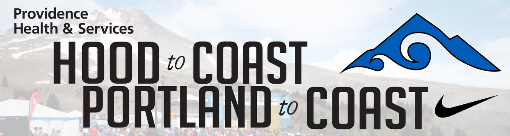
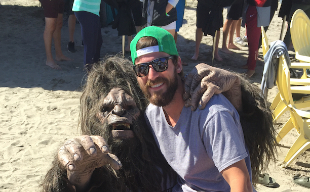

The Experience
Hood to Coast – DICK’S Sporting Goods Corporate Team
Looney Leg, Chunk Leg or the Cuckoo Leg? Don’t worry, i’ll explain!
DICK’S Sporting Goods is a Gold Level Sponsor of Hood to Coast Relay – the mother of all relay races. It’s a 192-mile relay that starts atop
Mt. Hood and finishes in Seaside, OR. Along the way you’ll run at dawn and at dusk, in the mist and on the gravel and you may even have
your own sasquatch sighting (we’re serious, it can happen this year). As a sponsor DSG has three teams for a total of 36 runners and 6
drivers. Here are the ins and outs of what it takes to be a DSG corp team member:
All DSG Corporate team runners must:
- Be OK with getting to know your co-workers on a different level. It’s one thing to see a co-worker on the treadmill next to you at the
gym, another to sleep on their shoulder as you just ran 10 miles without a change of clothes or a shower.
- Have a sense of humor as the lack of sleep combine with runs makes for some great (possibly non-work appropriate stories).
- Have some time and money to make the trip (we’ll cover this in more detail)
- Be fun!
My Role
As a Corporate DSG member of "Team Yeti", my role was a bit complex. I not only would be participating as a runner, acting as a travel guide,
representing my company as a main sponsor for the event, but also decided that this would be the perfect opportunity to peak inside the inner workings of an
event that not many are fortunate (or maybe crazy) enough to attend. Before participating at Hood to Coast, I had no idea how locked down this wonderful/insane 3
day relay was for racers.

The Process
The Scoop
GREEN LACES || All weekend
- DICK'S Sporting Goods was and still is committed to help #saveyouthsports. Join us in our quest to get green laces on sneakers across the country by swapping out
your laces. Green laces are available for purchase at any DICK's Sporting Goods store. If we were spotted along the course wearing a pair, THE Sasquatch
or a DSG brand ambassador would have an instant prize for us.
STARTING LINE || Friday, August 25th, 5:45AM - Noon
- Consumers and racers had the opportunity to snap a photo in front of a branded backdrop and/or pick up a branded Buff and/or pair of arm sleeves prior to
the race start.
- Cowbells were also be distributed for fans to help cheer on the racers.
EXCHANGE 6 || Friday, August 25th, 8:45AM - 5:45PM
- A recover and cool-down station with music, misting tens, yoga mats and foam rollers was set up to accomodate the first wave of runners who completed
the course from the Starting Line to Exchange 6.
- Trigger Point's Master Trainer was onsite to demonstrate foam rolling techniques. VERY COOL and super helpful!
- The racers starting their leg at Exchange 6 had the chance to pick up a Buff or pair of arm sleeves.
EXCHANGE 12 || Friday, August 25th, 1:30PM - 11:30PM
- DSG set up a recovery station with two trainers and provided KT Tape services to racers. The station included music and massage tables (so key).
EXCHANGE 24 "TENT CITY" || Friday, August 25th, 12PM - Saturday, August 26th Noon
- DSG set up 400 camping tents and a VIP camping area for racers to rest ... for some reason I decided to fall asleep in a van chair. Not my best decision.
- Scorecard Members would show their rewards card at the check-in and received a branded "Sleeping Better Bag" containing an eye mask and ear plugs.
FINISH LINE || Saturday, August 26th, 8:30AM - 6:00PM
- A recovery tent was available for the DSG racers with personal trainers onsite to provide foam rolling services.
- THE Sasquatch photo backdrop, name wall, and large graphic map was set up for photo opportunities
- Consumers were able to pick up cow bells and cheered the racers on as they crossed the Finish Line.
DSG VIP TEAM SUITE (FINISH LINE) || Saturday, August 26th, 8:30AM - 6:00PM
- A VIP Lounge area was set up for the DSG Team members with camp chairs, beach umbrellas, S'mores (s'more what?!) a fire pit, dining tables, and a bar with a
dedicated mixologist.
- A recovery area with massage tables and two massage therapists was also available and greatly taken advantage of following the finish.
SASQUATCH || Thursday, August 24th - Saturday, August 26th, various times
- THE Sasquatch with branded DSG apparel also made an appearance at various exchange points and locations throughout the course. Sasquatch would carry a backpack
and distribute branded earbuds to anyone he saw wearing Green Laces.

The Result
*Team Yeti placed top 10! Incredible experience, definitely something I will always remember.